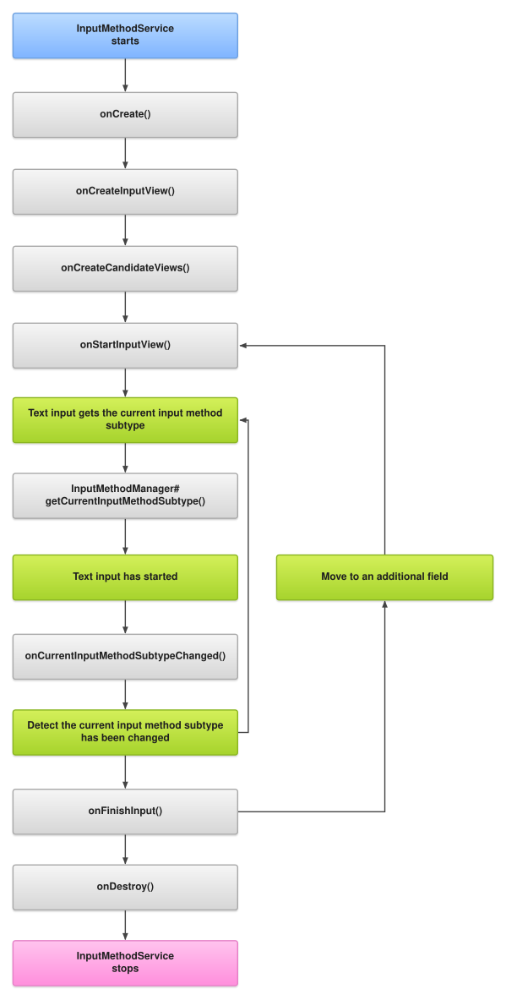

커스텀 키보드를 개발하기 위해서는 무조건 InputMethodService를 등록해야 합니다. 키보드 UI가 휴대폰 화면에 올라올 때 InputMethodSerivce의 lifecycle을 타기 때문에 커스텀 키보드 개발에 있어서 매우 중요하다 볼 수 있습니다. 커스텀 키보드를 개발하면서 조사했던 내용을 공유하고자 합니다.

onCreate()
- 커스텀한 키보드 서비스(InputMethodService)가 기본 키보드로 등록 됐을 때 한번 호출 됩니다.
onDestroy()
- 커스텀한 키보드 서비스(InputMethodService)가 다른 키보드로 변경되어 기본 키보드에서 해지 됐을 때 한번 호출 됩니다.
OnCreateInputView(), onCreateCandidatesView()
- 커스텀한 키보드가 기본 키보드로 등록되고 난 후 UI가 최초로 보여지는 시점에 한번만 호출됩니다.
- 커스텀한 UI의 View를 return하여 메인 키보드 영역에 커스텀한 UI를 표시합니다.
onBindInput()
- input method가 새로운 client(텍스트 필드)에 종속 됐을 때 호출이 됩니다. 즉 새로운 앱이나 화면에서 키보드가 전환 됐을 때 onBindInput이 호출됩니다.
onStartInput(EditorInfo attribute, boolean restarting)
- editor에서 문자 입력이 시작 됐다는 정보를 받으면 onStartInput 메서드가 호출됩니다.
- attribute 함수 인자를 통해 입력이 시작된 editor의 정보를 얻을 수 있습니다.
onStartInputView(EditorInfo attribute, boolean restarting)
- 키보드의 UI가 보이는 시점에서 onStartInputView가 호출 됩니다.
onFinishInput()
- editor에서 문자 입력이 종료 됐다는 정보를 받으면 onFinishInput 메서드가 호출됩니다.
- 같은 editor에서 키보드가 restart 된다면 해당 메서드는 호출되지 않습니다.
onFinishInputView(boolean finishingInput)
- UI가 보이지 않는 시점에서 onFinishInputView가 호출됩니다.
onUpdateSelection(int oldSelStart, int oldSelEnd, int newSelStart, int newSelEnd, int candidatesStart, int candidatesEnd)
- application에서 editor의 text 입력 영역이 변경됐다고 알릴 때 마다 호출됩니다.
메서드 호출 순서에 대한 분석
- onBindInput 메서드가 호출된다면, onStartInputView, onFinishInputView 둘 중 하나의 메서드가 같이 호출됩니다. 화면 전환 여부와 상관없이 키보드 UI가 올라오면 onStartInputView 메서드만 호출되고, UI가 내려가면 onFinishInputView만 호출됩니다.
- 만약 A앱에서 키보드가 올라온 상황에서 B앱으로 화면 전환이 됐다면 onFinishInputView → onBindInput 순서로 호출되며, 새로운 앱에서 키보드가 올라왔다면 onBindInput → onStartInputView 순서로 메서드가 호출됩니다.